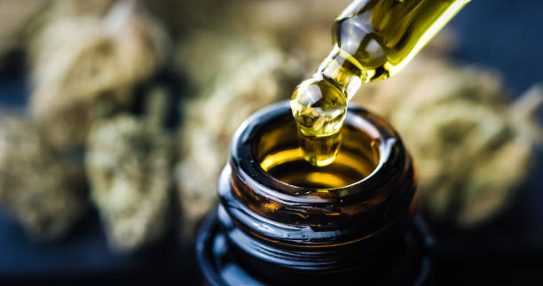

News
Medical Cannabis for Inflammatory Bowel Disease Efficacy
Risks of Cannabis for Inflammatory Bowel Disease
Legal Access to Cannabis for Inflammatory Bowel Disease
About Us
The Medical Cannabis: Cannabis RX
What is the link between medical cannabis and treating inflammatory bowel disease?
Jun 12, 2024
In recent years, there has been growing interest and research into the potential benefits of medical cannabis in treating inflammatory bowel disease (IBD).. IBD is a chronic condition that affects the gastrointestinal tract, causing inflammation and leading to symptoms such as abdominal pain, diarrhea, and weight loss.
What are the potential benefits of using medical cannabis for inflammatory bowel disease?
Jun 12, 2024
Inflammatory bowel disease (IBD) is a chronic condition that affects the digestive system, causing inflammation and damage to the gastrointestinal tract.. Symptoms of IBD include abdominal pain, diarrhea, fatigue, and weight loss, among others.
What is the current research saying about the effectiveness of medical cannabis for treating inflammatory bowel disease?
Jun 12, 2024
In recent years, there has been a growing interest in the potential use of medical cannabis for treating inflammatory bowel disease (IBD).. IBD is a chronic condition that affects the gastrointestinal tract and includes conditions such as Crohn's disease and ulcerative colitis.
What are the different ways to consume medical cannabis for managing symptoms of inflammatory bowel disease?
Jun 12, 2024
If you suffer from inflammatory bowel disease (IBD), you may have considered using medical cannabis to help manage your symptoms.. Cannabis has been shown to have anti-inflammatory properties and can provide relief from pain, nausea, and cramping associated with IBD.
What is the legal status of using medical cannabis for inflammatory bowel disease treatment?
Jun 12, 2024
The legal status of using medical cannabis for inflammatory bowel disease treatment varies depending on where you are located.. In some places, such as certain states in the United States and countries like Canada, medical cannabis is legal and can be prescribed by doctors for a variety of conditions, including inflammatory bowel disease.
In these locations, patients with inflammatory bowel disease may be able to access medical cannabis products to help manage their symptoms.

How to Naturally Manage Inflammatory Bowel Disease with Medical Cannabis
Jun 12, 2024
Inflammatory Bowel Disease (IBD) is a chronic condition that affects millions of people around the world, causing inflammation in the digestive tract and leading to symptoms like abdominal pain, diarrhea, and fatigue.. While there are various treatments available for IBD, many patients are turning to medical cannabis as a natural way to manage their symptoms.
Medical cannabis has gained popularity in recent years for its potential therapeutic benefits in treating a wide range of conditions, including chronic pain, anxiety, and inflammation.
Discover the Power of Medical Cannabis for Inflammatory Bowel Disease Relief
Jun 12, 2024
Medical cannabis has been gaining traction as a potential treatment for various medical conditions, including Inflammatory Bowel Disease (IBD).. IBD is a chronic inflammatory condition of the digestive system that affects millions of people worldwide.
Want Relief from Inflammatory Bowel Disease? Try Medical Cannabis Today!
Jun 12, 2024
Are you struggling with the painful symptoms of Inflammatory Bowel Disease (IBD)?. Do you find yourself constantly searching for relief but coming up short?
Curious about Using Medical Cannabis for Inflammatory Bowel Disease? Here's How!
Jun 12, 2024
If you're curious about using medical cannabis for inflammatory bowel disease, you're not alone.. Many people with IBD are turning to cannabis as a potential treatment option, and there is growing evidence to support its use.
Inflammatory bowel disease (IBD) is a chronic condition that causes inflammation in the digestive tract.
Say Goodbye to Inflammatory Bowel Disease Symptoms with Medical Cannabis
Jun 12, 2024
Inflammatory Bowel Disease, or IBD, is a chronic condition that affects the digestive system and can cause debilitating symptoms such as abdominal pain, diarrhea, and fatigue.. For those who suffer from IBD, finding relief from these symptoms can be a constant struggle.
Fortunately, medical cannabis has emerged as a promising treatment option for managing IBD symptoms.
Overview of Inflammatory Bowel Disease and its symptoms
Jun 12, 2024
Inflammatory Bowel Disease (IBD) is a chronic condition that affects the gastrointestinal tract, causing inflammation and damage to the lining of the intestines.. There are two main types of IBD: Crohn's disease and ulcerative colitis.
Benefits of using medical cannabis for treating Inflammatory Bowel Disease
Jun 12, 2024
Inflammatory Bowel Disease (IBD) is a chronic condition that causes inflammation in the digestive tract, leading to symptoms such as abdominal pain, diarrhea, and fatigue.. For those suffering from IBD, finding effective treatment options can be challenging.
Different strains of cannabis that may be effective in managing inflammation
Jun 12, 2024
In recent years, there has been a growing interest in the use of cannabis as a natural remedy for inflammation.. With so many different strains available, it can be overwhelming to determine which one may be most effective in managing this common health issue.
One of the key factors to consider when choosing a strain of cannabis for inflammation is its cannabinoid profile.
Potential side effects and risks of using medical cannabis for IBD
Jun 12, 2024
Medical cannabis has been gaining popularity as a treatment option for individuals with inflammatory bowel disease (IBD).. While it can provide relief for symptoms such as pain, inflammation, and nausea, there are potential side effects and risks associated with its use.
One of the most common side effects of using medical cannabis is drowsiness or fatigue.
Current research and studies on the use of medical cannabis for treating Inflammatory Bowel Disease
Jun 12, 2024
In recent years, there has been a growing interest in the use of medical cannabis for treating Inflammatory Bowel Disease (IBD).. IBD is a chronic condition that affects millions of people worldwide and can cause symptoms such as abdominal pain, diarrhea, and weight loss.